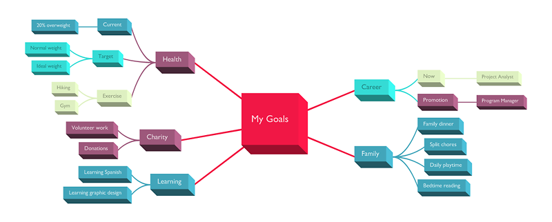

Introduction¶
Overview¶
twyg lets you visualise arbitrary tree structures in a pretty way. The appearance of the tree (layout, color, node and connection shapes etc.) is fully controlled via configuration files in a programmatic way. Comes with an extensive set of default configurations and colorschemes. Requires Cairo (and optionally PIL) for image generation when used from the command-line or can be used as a NodeBox1 library.
